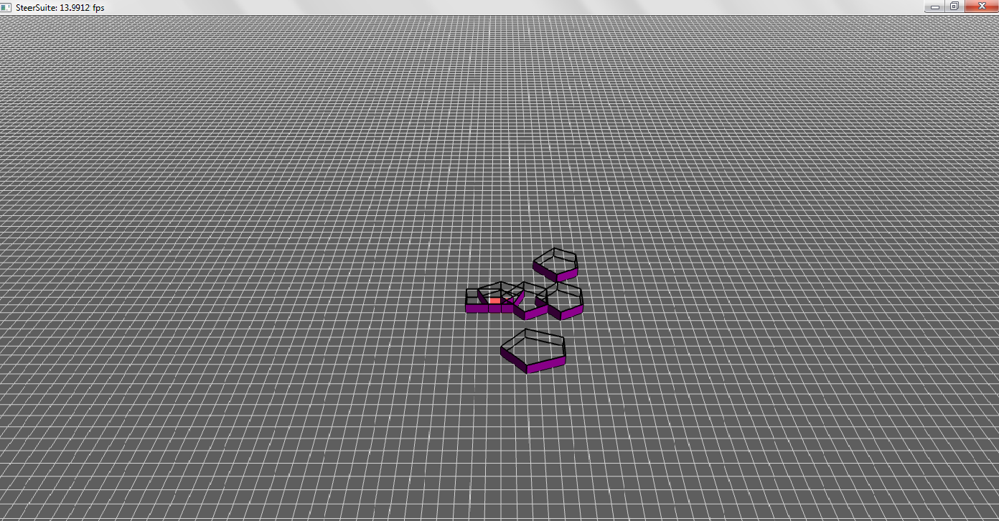
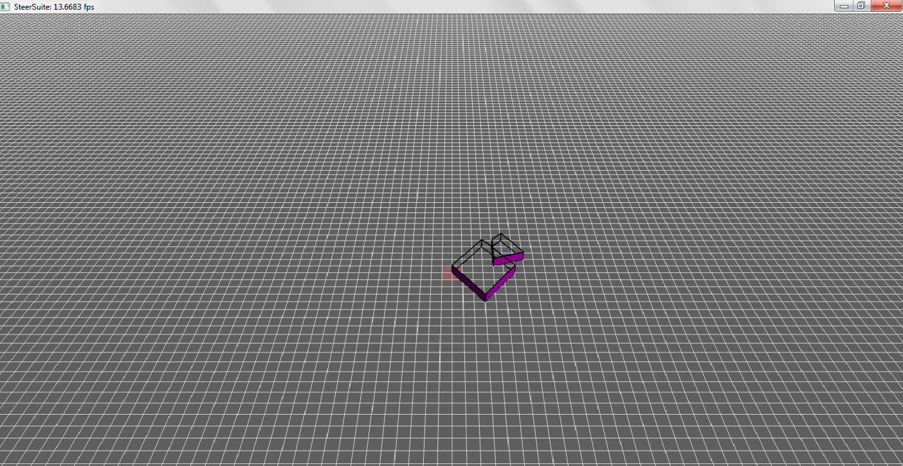
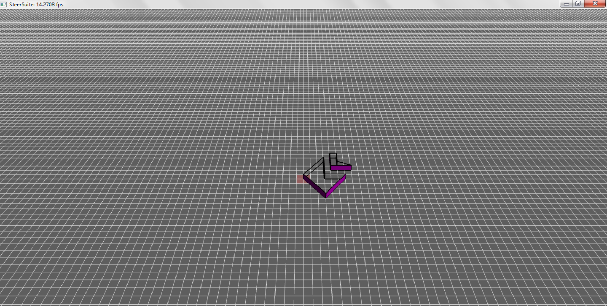

Description
Implementation
We implemented GJK and EPA algorithms to detect collisions.
Part A
$ ./steersim -testcase polygons1 -ai collisionAI
- Collision detected between polygon No.0 and No.1 with a penetration depth of 0.707107 and penetration vector of (0.707107,0,0.707107)
- Collision detected between polygon No.0 and No.2 with a penetration depth of 0.707107 and penetration vector of (0.707107,0,-0.707107)
-
NO collision detected between polygon No.0 and No.3
-
NO collision detected between polygon No.0 and No.4
-
Collision detected between polygon No.0 and No.5 with a penetration depth of 2 and penetration vector of (0,0,-1)
-
NO collision detected between polygon No.1 and No.2
-
NO collision detected between polygon No.1 and No.3
-
Collision detected between polygon No.1 and No.4 with a penetration depth of 2.68328 and penetration vector of (-0.447214,0,-0.894427)
-
Collision detected between polygon No.1 and No.5 with a penetration depth of 1 and penetration vector of (0,0,-1)
-
NO collision detected between polygon No.2 and No.3
-
Collision detected between polygon No.2 and No.4 with a penetration depth of 0.744208 and penetration vector of (0.496139,0,0.868243)
-
Collision detected between polygon No.2 and No.5 with a penetration depth of 1.34164 and penetration vector of (-0.894427,0,-0.447214)
-
Collision detected between polygon No.3 and No.4 with a penetration depth of 2.59973 and penetration vector of (-0.371391,0,-0.928477)
-
Collision detected between polygon No.3 and No.5 with a penetration depth of 1.78885 and penetration vector of (-0.447214,0,0.894427)
-
Collision detected between polygon No.4 and No.5 with a penetration depth of 1.34164 and penetration vector of (-0.894427,0,-0.447214)

Part B
$ ./steersim -testcase polygons2 -ai collisionAI
Collision detected between polygon No.0 and No.1 with a penetration depth of 3.15296 and penetration vector of (0.242536,0,0.970143)
Part C
The difference between polygons1 in part A and polygons2 in part B is that part B contains concave polygons. GJK/EPA does not work with concave polygons.
Collision detected between polygon No.0 and No.1 with a penetration depth of 3.15296 and penetration vector of (0.242536,0,0.970143)

Part D - A.K.A. Bonus Features
Not yet completed.

Documentation |
Github